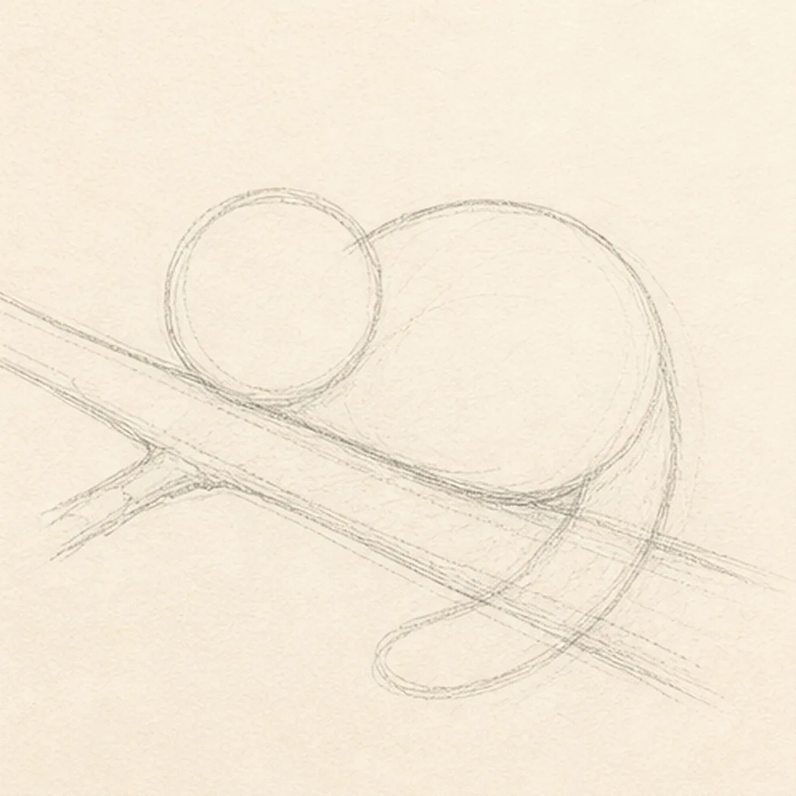
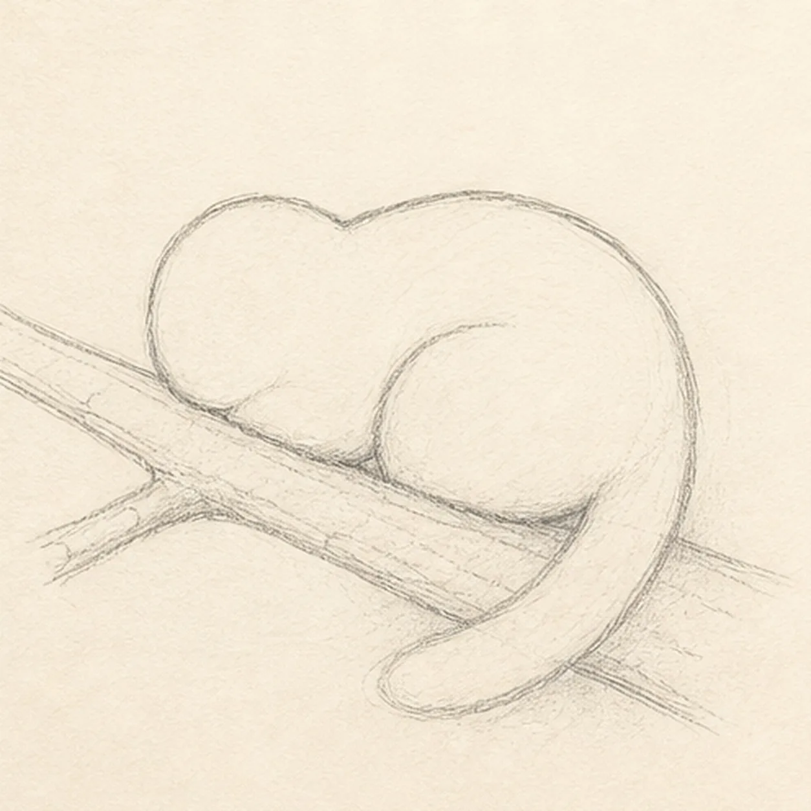
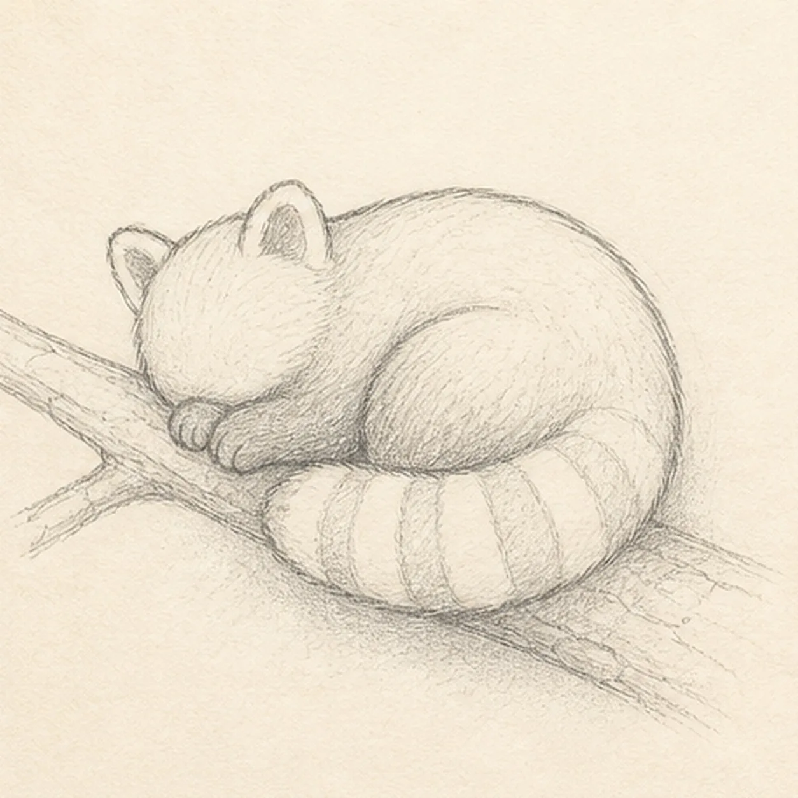
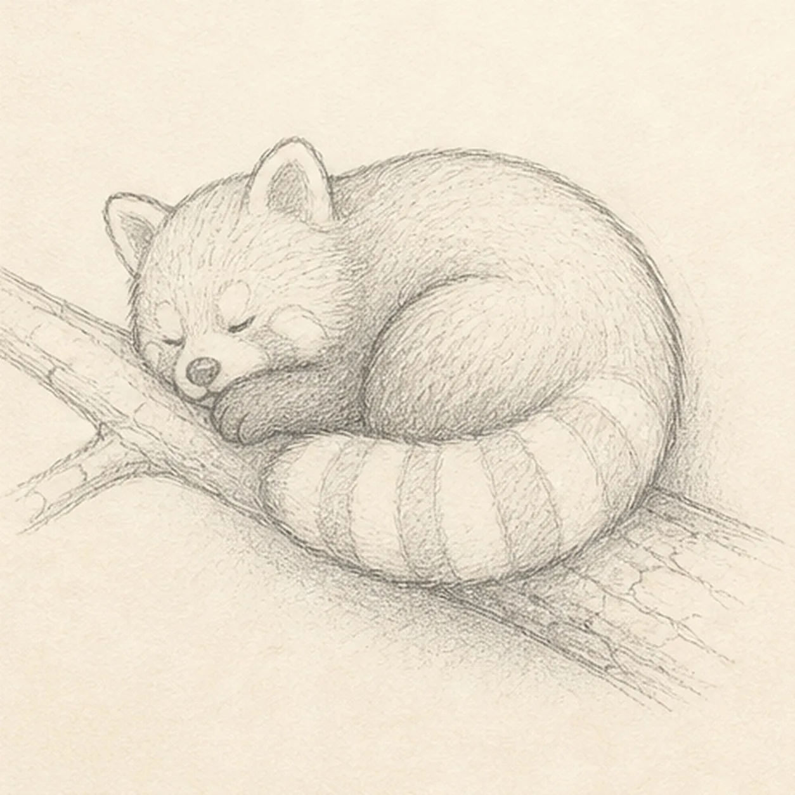
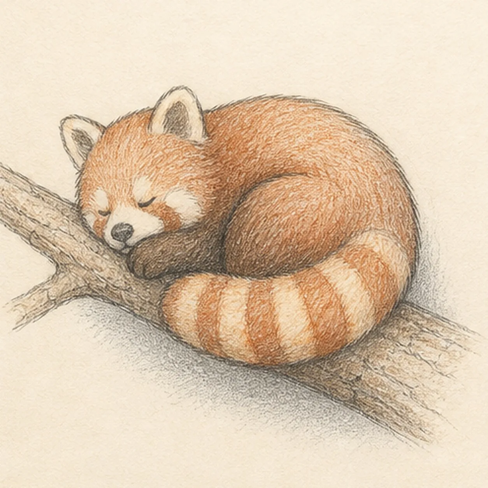

From the archive
Let's draw a sleepy red panda curled on a branch
Treat this as one small practice round: build the subject lightly, notice the shapes, then darken only the lines that help the finished sketch.
-
01

Map the branch and curl
Use pale HB to place one diagonal branch with a short fork, a round head circle, a curled body bean, one broad tail arc, two tucked-paw ovals, four pale tail-stripe guides, and a broken shadow footprint.
Sketch tip: Keep this first drawing loose. Reserve the body and tail footprints over the branch now so bark lines never need to be erased later.
-
02

Wrap the sleeping body
Connect the head and body into one compact left-facing curled panda silhouette while preserving the branch, paw, tail, stripe, and shadow guides.
Sketch tip: Pull the back in one long relaxed curve, then let the belly tuck inward above the tail. Compare the empty paper inside the curl before darkening anything.
-
03

Lay in the tail and paws
Draw one broad tail wrapping beneath the body, exactly four pale stripe bands, and the same two tucked paws on their established guides.
Sketch tip: Space the four stripes across the tail curve rather than as straight bars. Stop the branch texture beneath the tail route so the overlap stays clean.
-
04

Settle the sleepy face
Add exactly two rounded ears, two closed eye curves, one small nose, two pale cheek-mask shapes, small paw toes, and a few light bark seams.
Sketch tip: Keep the facial marks tiny and low on the head. Let the ear shapes differ slightly like real pencil marks, but keep both ears clearly visible.
-
05

Glaze the quiet color
Strengthen the established graphite fur and bark texture, then layer rust, cream, warm brown, and cool gray over the same panda, branch, stripes, and broken shadow.
Sketch tip: Use short pencil strokes that follow the body curve and tail. Build two light color passes instead of pressing hard enough to hide the paper tooth.
-
06

Finish the resting panda
Clarify only the established keeper contours, fur texture, tail stripes, restrained color, and broken shadow.
Sketch tip: Count one panda, two ears, two closed eyes, two paws, one tail, four stripes, one branch fork, and one shadow before stopping. Try another branch angle in your own version, but keep the curl simple and restful.